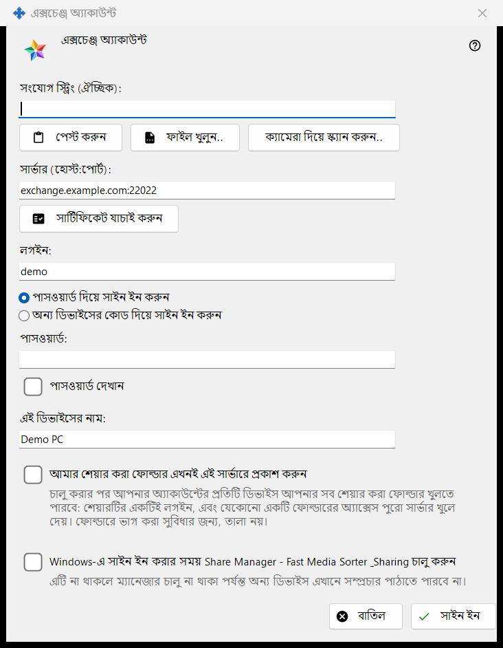
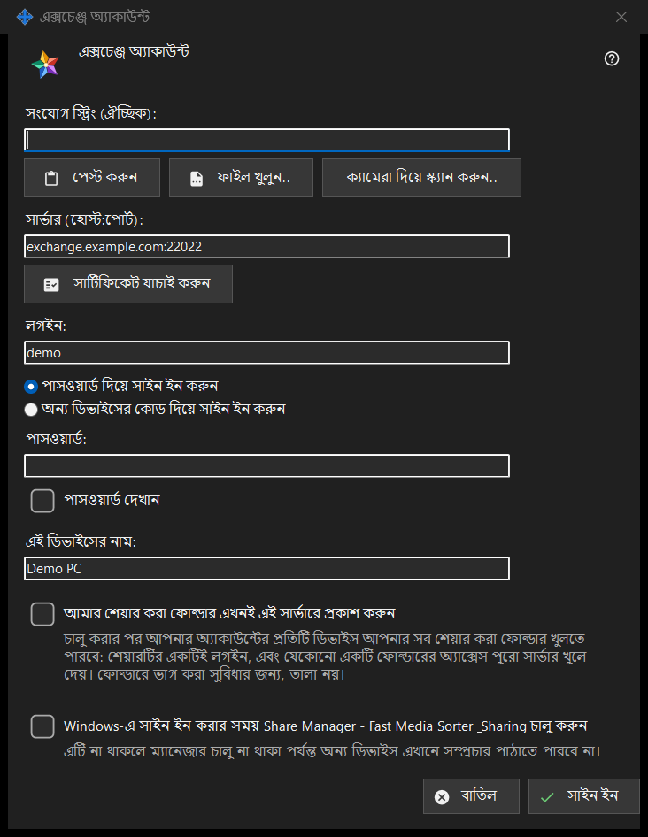

এক্সচেঞ্জ অ্যাকাউন্ট
এটি কীসের জন্য
এই পিসিকে Media Exchange Server-এর কোনো অ্যাকাউন্টের ডিভাইস হিসেবে সাইন ইন করায়। জানালাটি Share Manager সেটিংসের এক্সচেঞ্জ অ্যাকাউন্ট পৃষ্ঠার সাইন ইন.. বোতাম থেকে খোলে, এবং এক্সচেঞ্জ সার্ভারের মাধ্যমে প্রকাশ করুন.. থেকেও খোলে, যা প্রকাশ করার বিকল্পে আগে থেকেই টিক দিয়ে জানালাটি খোলে।


এই ক্রমে
- চাইলে একটি সংযোগ স্ট্রিং পেস্ট করুন, খুলুন বা স্ক্যান করুন; তা সার্ভার ও লগইন ভরে দেয়।
- সার্টিফিকেট যাচাই করুন চাপুন এবং সিস্টেম সেটি বিশ্বাস না করলে ও স্ট্রিংয়ে না থাকলে ফিঙ্গারপ্রিন্টটি অপারেটরের ফিঙ্গারপ্রিন্টের সঙ্গে মেলান, তারপর এই সার্টিফিকেটকে বিশ্বাস করুন চাপুন।
- লগইন এবং পাসওয়ার্ড বা পেয়ারিং কোড দিন।
- ডিভাইসের নাম ও বিকল্পগুলো ঠিক করুন।
- সাইন ইন চাপুন।
উপাদানসমূহ
সংযোগ স্ট্রিং
সংযোগ স্ট্রিং (ঐচ্ছিক) ঘরে এমন একটি স্ট্রিং বসে যা আপনি পেস্ট করুন দিয়ে পেস্ট করেন, ফাইল খুলুন.. দিয়ে .fmsexch ফাইল বা QR ছবি থেকে লোড করেন, অথবা ক্যামেরা দিয়ে স্ক্যান করুন.. দিয়ে পড়ে নেন। এটি শুধু সার্ভার ও লগইন ভরে; সাইন ইন চাপার আগে কিছুই সংযুক্ত হয় না। ফিঙ্গারপ্রিন্টসহ স্ট্রিং সেই সার্টিফিকেটটি পিন করে দেয়, তাই হাতে মেলানোর কিছু থাকে না। আমন্ত্রণসহ স্ট্রিং জানালাটিকে নিবন্ধনে নিয়ে যায়। ব্যবহার-অযোগ্য স্ট্রিং এক লাইনের প্রত্যাখ্যান পায়।
সার্ভার ও সার্টিফিকেট
সার্টিফিকেট যাচাই করুন সার্ভার (হোস্ট:পোর্ট) ঘরে লেখা সার্ভারে সংযোগ করে এবং সার্ভারের সার্টিফিকেটের ফিঙ্গারপ্রিন্ট দেখায়। সিস্টেম সার্টিফিকেটটি বিশ্বাস করলে কিছু পিন করার দরকার নেই। না হলে ফিঙ্গারপ্রিন্টটি সার্ভারের অপারেটরের দেওয়া ফিঙ্গারপ্রিন্টের সঙ্গে মেলান এবং এই সার্টিফিকেটকে বিশ্বাস করুন চাপুন; সিস্টেমের অচেনা সার্টিফিকেট কেবল এই বোতামই গ্রহণ করে। সার্ভারের লেখা বদলালে যাচাইয়ের ফল ভুলে যাওয়া হয়। কোনো সার্টিফিকেট বিশ্বস্ত না হওয়া পর্যন্ত Enter কিছু করে না, ফলে এমন সার্ভারে কোনো পাসওয়ার্ড যায় না যার সত্যতা কেউ নিশ্চিত করেনি।
লগইন, পাসওয়ার্ড ও পেয়ারিং কোড
লগইন লিখুন এবং পাসওয়ার্ড দিয়ে সাইন ইন করুন (পাসওয়ার্ড, সঙ্গে পাসওয়ার্ড দেখান) বা অন্য ডিভাইসের কোড দিয়ে সাইন ইন করুন (পেয়ারিং কোড, যা একই অ্যাকাউন্টের অন্য কোনো ডিভাইস দেয়) বেছে নিন। মান পাঠানোর মুহূর্তেই ঘরটি খালি হয়ে যায়, ফল যা-ই হোক; ডিভাইস শুধু একটি টোকেন রাখে, পাসওয়ার্ড কখনোই রাখে না।
আমন্ত্রণের মাধ্যমে নিবন্ধন
স্ট্রিংয়ে আমন্ত্রণ থাকলে সাইন ইনের দুটি বিকল্পের জায়গায় নিবন্ধন আসে: অ্যাকাউন্টের পাসওয়ার্ড ও পাসওয়ার্ড আরেকবার ঘর দুটি নতুন পাসওয়ার্ড ঠিক করে, যা দেখানো নীতি মানতে হবে (কমপক্ষে 10টি অক্ষর, একটি বড় হাতের ও একটি ছোট হাতের লাতিন অক্ষর এবং একটি অঙ্ক), আর বোতামে লেখা থাকে অ্যাকাউন্ট তৈরি করুন।
ডিভাইসের নাম ও বিকল্প
এই ডিভাইসের নাম (সর্বোচ্চ 64টি অক্ষর) শুরুতে কম্পিউটারের নাম থাকে। আমার শেয়ার করা ফোল্ডার এখনই এই সার্ভারে প্রকাশ করুন বন্ধ থাকে, যদি না আপনি এক্সচেঞ্জ সার্ভারের মাধ্যমে প্রকাশ করুন.. দিয়ে এসে থাকেন; চালু করলে আপনার অ্যাকাউন্টের প্রতিটি ডিভাইস আপনার সব শেয়ার করা ফোল্ডার খুলতে পারে, কারণ শেয়ারিংয়ের লগইন একটিই। শেষ বিকল্পটি আপনি Windows-এ সাইন ইন করলে Share Manager চালু করে (ডিফল্টভাবে বন্ধ), যাতে অন্য ডিভাইস এই পিসিতে সম্প্রচার পাঠাতে পারে।
একবারে একটি সার্ভার
একটি ডিভাইস একটি সার্ভারেরই হয়। অন্য সার্ভারে সাইন ইন করতে গেলে জিজ্ঞাসা করা হয় বর্তমান সার্ভার ছাড়বেন কি না, এবং পুরনো সার্ভারে প্রকাশ বন্ধ হয়ে যায়। যোগাযোগ ব্যর্থ হলে Why doesn't it connect?.. বোতামটি সংযোগ পরীক্ষা খোলে।
ম্যানেজার সেটিংস · SFTP শেয়ারিং সেটিংস · এক্সচেঞ্জ সার্ভার সেটিংস